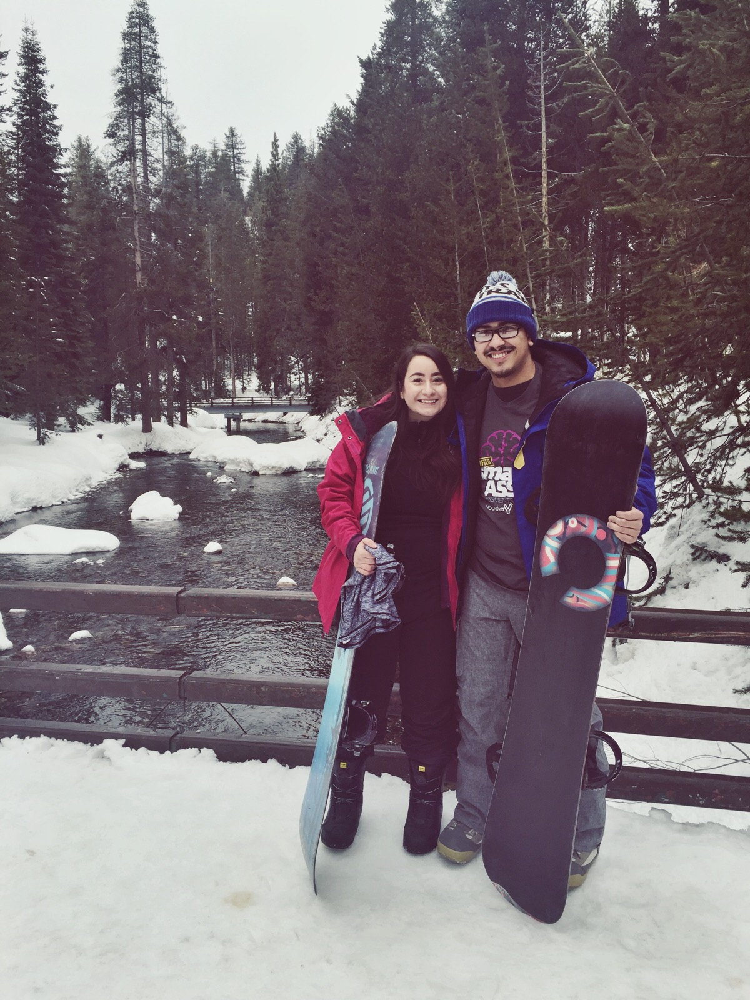
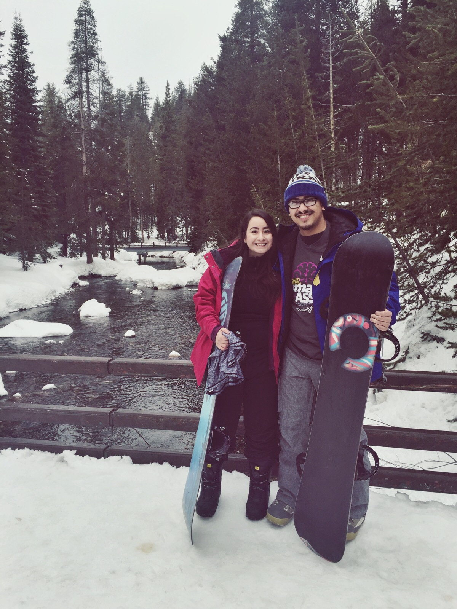

About George
 

Experience
Almost all his life, George grew up in Patterson where he used to drive to his first job 30 minutes and drive to college in 40. He went to school for computer science but was unhappy about the pace he was learning. Instead of continuing with academics he decided to find a job where he could utilize what he picked up and start gaining practical experience. Although his first job in tech consisted of coding in C# and using databases, he always wanted more.
After working in a basic tech job for a year George wanted to make another jump in his career. He went back to a bootcamp where, unlike college, still gave him the satisfaction of building things. He now works in a group of three other developers doing freelance work.
Hobbies
Almost anything technology related will geek George out. Coding, video games, hardware, smart devices and connected home appliances are all things that interest him. Otherwise, he wouldn't be able to spend most days and nights in front of a computer screen. However, when he gets the chance he also likes to go paintballing during the summer, snowboarding during the winter and playing the guitar when he is stuck at home.